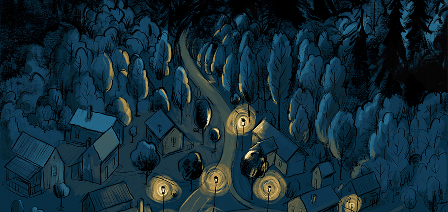
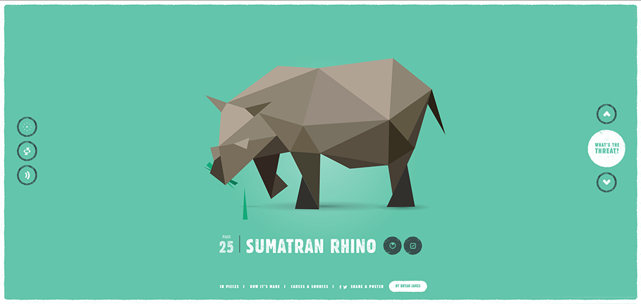

Comparitive Analysis
Journey Into sleep
Journey Into Sleep talks about sleep thrpough illutration and data visualization. I really like the ways that it uses scrolling to transition between illustrations and data. I also really love the purely illustration based intro that goes from the sky, zooms into a bedroom, and faded into content as we see someone sleeping.
In Pieces
In Pieces is an interactive data visualization site that explores species degridation. It showcases 30 different species, including the sumatran rhino. I specifically enjoy how they illustrate the rhino and the way that they display the data.